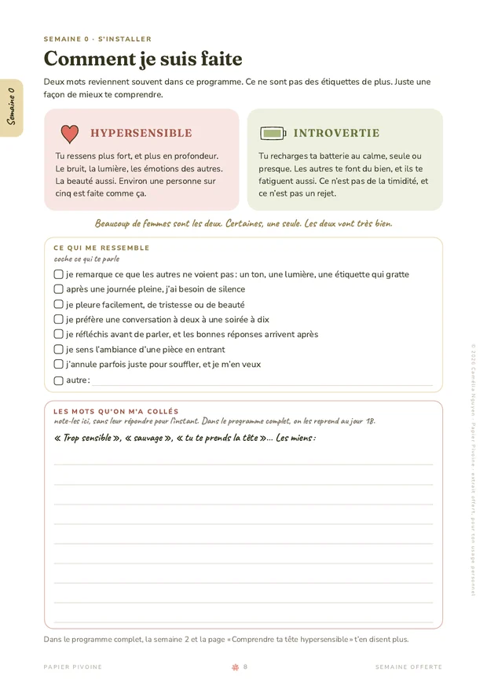

La réponse courte
Hypersensible et introvertie, ce n’est pas la même chose. Être introvertie, c’est recharger ta batterie au calme, seule ou presque : les autres te font du bien, et ils te fatiguent aussi. Être hypersensible, c’est ressentir plus fort et plus en profondeur, le bruit, la lumière, les émotions des autres, et la beauté aussi. On peut être l’une, l’autre ou les deux, et beaucoup de femmes sont les deux.
Moi, je suis les deux. J’ai découvert le mot introvertie en premier, et hypersensible est venu après. Quand j’ai trouvé ces deux mots, j’ai eu un certain sentiment d’être validée. Je te raconte un peu plus mon histoire sur ma page à propos.
Parmi les livres que je lis, il y a celui d’Ilse Sand, Hypersensibles & introvertis. Je me sentais toujours un peu bizarre par rapport aux autres. Ce livre m’a aidée à comprendre pourquoi. Voici ce que j’en ai retenu, avec mes mots, et une page pour voir ce qui te ressemble.
Être introvertie, c’est surtout une question d’énergie. Les autres te font du bien, et ils te fatiguent aussi, alors après une soirée, même une soirée sympa, tu as besoin de calme pour recharger ta batterie. Tu préfères souvent une vraie conversation à deux à un groupe où on parle de tout et de rien.
Ilse Sand rappelle que c’est le psychiatre Carl Gustav Jung qui a décrit l’introversion le premier, en 1921, et que selon les études, 30 à 50 % des gens sont introvertis. Tu es donc loin d’être la seule.
Ce n’est pas de la timidité, et ce n’est pas un rejet des autres. Moi, on m’a déjà prise pour une timide, et une ou deux personnes m’ont déjà dit de ne pas trop m’isoler. Le besoin de calme d’une introvertie ressemble parfois à ça vu de l’extérieur, alors que c’est juste sa façon de recharger.
Être hypersensible, c’est ressentir plus fort et plus en profondeur. Le bruit d’un restaurant plein, une lumière trop vive ou une étiquette qui gratte te fatiguent plus vite que les autres, et l’humeur de quelqu’un dans une pièce, tu la sens en entrant. La beauté te touche plus fort aussi, une musique, une lumière d’automne, une scène de film.
Le mot vient de la psychologue américaine Elaine Aron. D’après elle, comme le raconte Ilse Sand, 15 à 20 % des gens sont hypersensibles, à peu près une personne sur cinq.
Ce n’est pas une fragilité, c’est une façon d’être faite. Tu remarques ce que les autres ne voient pas, un ton, une lumière, un détail, et ça demande plus d’énergie à ton corps et à ta tête, alors tu as besoin de plus de temps pour digérer une journée.
Les deux mots se ressemblent parce qu’ils mènent souvent au même endroit, ton canapé, au calme, après une journée pleine. Mais ils ne parlent pas de la même chose. L’introversion dit où tu recharges ta batterie, et l’hypersensibilité dit avec quelle force tu ressens tout ce qui t’entoure.
| IntrovertieOù tu recharges | HypersensibleAvec quelle force tu ressens | |
|---|---|---|
| En une phrase | Tu recharges ta batterie au calme, seule ou presque. | Tu ressens plus fort, et plus en profondeur. |
| Ce qui te fatigue | Beaucoup de monde, longtemps, même des gens que tu aimes | Trop de bruit, de lumière, d’émotions autour de toi |
| Combien de personnes | 30 à 50 % selon les études | 15 à 20 %, environ une sur cinq |
C’est pour ça qu’on peut être l’une sans l’autre. Ilse Sand raconte qu’Elaine Aron a observé qu’environ 30 % des personnes hautement sensibles sont plutôt extraverties : elles aiment le monde, mais elles ressentent tout très fort. Et on peut être introvertie sans être hypersensible, aimer le calme sans être gênée par le bruit ou la lumière.
Beaucoup de femmes sont les deux, et c’est mon cas. Les petits signes d’une femme hypersensible et introvertie, moi, je les coche presque tous.
Quand tu es les deux, une journée pleine compte un peu double : il y a les gens, et il y a tout ce que tu as ressenti au milieu des gens. C’est souvent là qu’arrive la petite culpabilité d’annuler, de partir plus tôt ou de ne pas rappeler tout de suite, et ce n’est pas un défaut de caractère, c’est juste que ta batterie se vide plus vite.
Ilse Sand dit aussi que personne ne rentre à 100 % dans une case. Tu peux être très introvertie un jour de grosse fatigue, et plus ouverte quand ta batterie est pleine. Ces mots ne sont pas des diagnostics, ils servent juste à mieux te comprendre, et à arrêter de te demander ce qui cloche chez toi.
Dans ma semaine d’écriture offerte, la page 8 s’appelle « Comment je suis faite ». Elle met les deux mots côte à côte, et tu coches ce qui te ressemble.
À essayer
5 minComment je suis faite
« Beaucoup de femmes sont les deux. Certaines, une seule. Les deux vont très bien. »

Si tu as envie de me dire si tu es l’une, l’autre ou les deux, tu peux m’écrire ici. Ça me fait toujours plaisir de te lire.